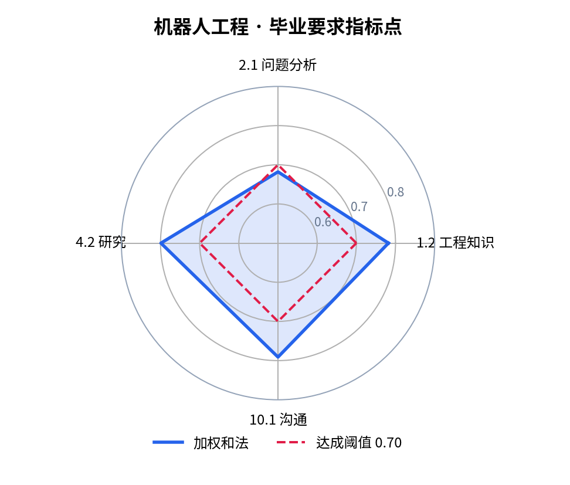
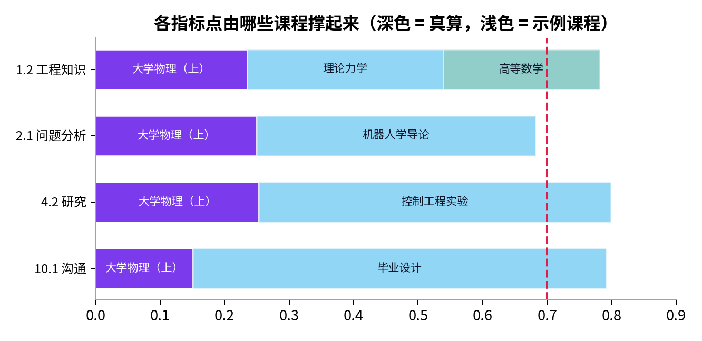
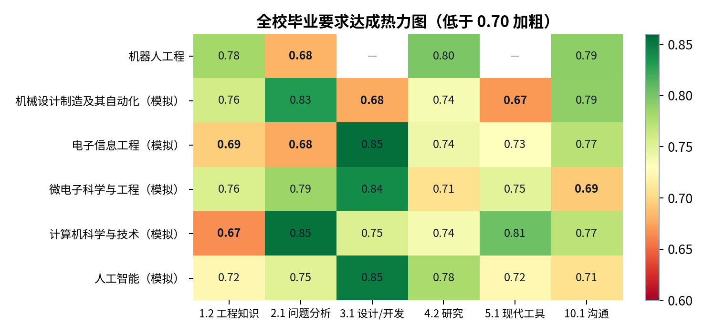

机器人工程专业毕业要求达成情况评价报告（样稿）
评价学年 2026–2027 评价方法：加权和法为主，最小值法对照 达成阈值 0.70
演示样稿：《大学物理（上）》一门课的数值由问渠评价流水线真算（模拟学生数据）；标“示例”的课程是示例数值。由校情中枢汇总各课程推送生成。
3 / 4 达成指标点
0.682最低
1 项改进任务
一、各指标点达成情况
| 毕业要求指标点 | 加权和法 | 最小值法 | 结论 |
|---|---|---|---|
| 1.2 工程知识（示例指标点） | 0.782 | 0.760 | 达成 |
| 2.1 问题分析（示例指标点） | 0.682 | 0.624 | 未达成 |
| 4.2 研究（示例指标点） | 0.799 | 0.780 | 达成 |
| 10.1 沟通（示例指标点） | 0.791 | 0.755 | 达成 |

二、支撑课程明细
| 指标点 | 支撑课程 | 课程目标 | 支撑权重 | 课程目标达成度 |
|---|---|---|---|---|
| 1.2 工程知识（示例指标点） | 大学物理（上） | CO1 | 0.3 | 0.782 |
| 1.2 工程知识（示例指标点） | 理论力学（示例） | — | 0.4 | 0.760 |
| 1.2 工程知识（示例指标点） | 高等数学（示例） | — | 0.3 | 0.810 |
| 2.1 问题分析（示例指标点） | 大学物理（上） | CO2 | 0.4 | 0.624 |
| 2.1 问题分析（示例指标点） | 机器人学导论（示例） | — | 0.6 | 0.720 |
| 4.2 研究（示例指标点） | 大学物理（上） | CO3 | 0.3 | 0.843 |
| 4.2 研究（示例指标点） | 控制工程实验（示例） | — | 0.7 | 0.780 |
| 10.1 沟通（示例指标点） | 大学物理（上） | CO4 | 0.2 | 0.755 |
| 10.1 沟通（示例指标点） | 毕业设计（示例） | — | 0.8 | 0.800 |


三、分析
- 2.1 问题分析（示例指标点）：加权和 0.682，最低的支撑课程是 大学物理（上）（0.624）。
四、改进任务（校情中枢 → 课程负责人）
- CO2 未达成：已向《大学物理（上）》课程负责人下达改进任务，下学期复核（评价—反馈—改进闭环）。